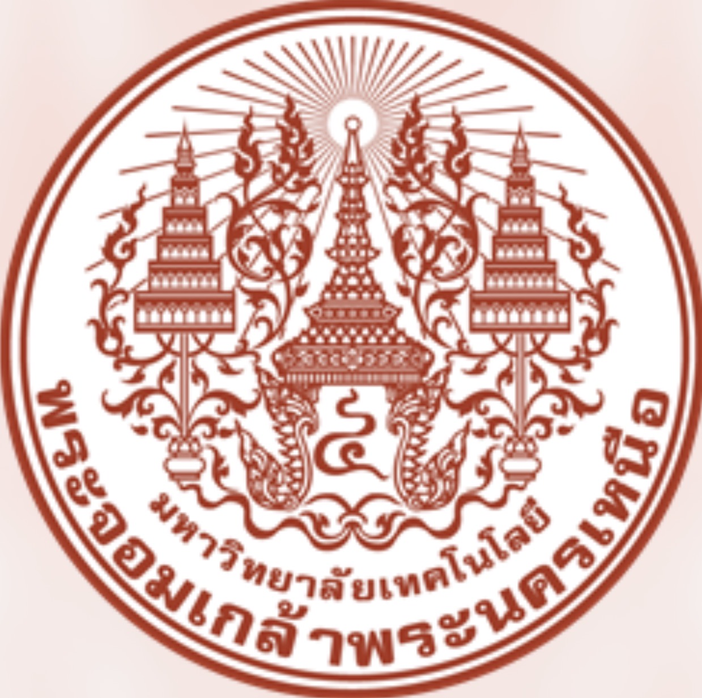

ในฐานะนักเรียนมัธยมศึกษาปีที่ 6 ซึ่งกำลังอยู่ในช่วงเวลาสำคัญของชีวิตที่ต้องเลือกเส้นทางอนาคตอย่างจริงจัง ข้าพเจ้ามีความสนใจในอาชีพด้านวิศวกรรมอุตสาหการและโลจิสติกส์ เนื่องจากข้าพเจ้าสนใจการวางแผน การจัดการ และการแก้ไขปัญหาอย่างเป็นระบบ รวมถึงมีความสนใจว่าการทำงานในแต่ละขั้นตอนสามารถพัฒนาให้มีประสิทธิภาพมากยิ่งขึ้นได้อย่างไร
ข้าพเจ้ามองว่าวิศวกรรมอุตสาหการและโลจิสติกส์ไม่ได้เกี่ยวข้องเพียงแค่การทำงานในโรงงานหรือการขนส่งสินค้าเท่านั้น แต่ยังครอบคลุมถึงการวางแผนกระบวนการทำงาน การบริหารทรัพยากร การลดต้นทุนและความสูญเสีย รวมถึงการนำข้อมูลมาวิเคราะห์เพื่อช่วยในการตัดสินใจ ซึ่งเป็นสิ่งที่มีความสำคัญต่อการดำเนินงานขององค์กรและธุรกิจในปัจจุบัน ด้วยเหตุผลนี้ ข้าพเจ้าจึงสนใจที่จะศึกษาต่อในสาขาวิศวกรรมอุตสาหการและโลจิสติกส์ เพื่อพัฒนาความรู้และทักษะด้านการวางแผน การวิเคราะห์ และการแก้ไขปัญหาอย่างเป็นระบบ และนำความรู้ที่ได้รับไปประยุกต์ใช้ในการทำงาน รวมถึงพัฒนาตนเองให้สามารถประกอบอาชีพและสร้างประโยชน์ให้กับองค์กรได้อย่างมีประสิทธิภาพในอนาคตด้วยเหตุผลนี้ ข้าพเจ้าจึงสนใจที่จะศึกษาต่อและพัฒนาความรู้ด้านการบัญชี เพื่อให้มีความเข้าใจเกี่ยวกับธุรกิจมากยิ่งขึ้น และสามารถนำความรู้ไปใช้ในการประกอบอาชีพในอนาคตได้อย่างมีประสิทธิภาพ

หลักสูตรวศ.บ.วิศวกรรมอุตสาหการ (ภาษาไทย ปกติ) วิทยาเขต ระยอง
หลักสูตรวศ.บ.วิศวกรรมโลจิสติกส์ (ภาษาไทย ปกติ) วิทยาเขต ระยอง